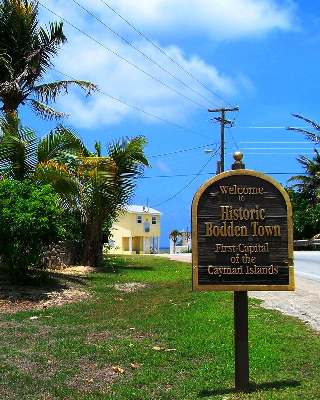

Tripadvisor review — “Best jerk chicken on Grand Cayman”“Probably the best jerk chicken I've ever eaten — and I had it several times that trip.”
The Yard
Look for the cow and the pig.
You'll know you've found us: two life-sized statues by the road, picnic tables under the trees, smoke coming off the drums, and chickens patrolling the grass. That's the yard, just before you enter Bodden Town on Shamrock Road.
Miss Rankin cooks the way her mother taught her — jerk over real charcoal, and the old Cayman dishes done slow: turtle stew, oxtail, curry goat. The family butcher shop and farm are right next door, so the meat doesn't travel far.
- Mother-to-daughter recipes, cooked since way back
- Real charcoal drums — no gas shortcuts
- Our own butcher & farm next door
- Order at the window, eat in the garden
